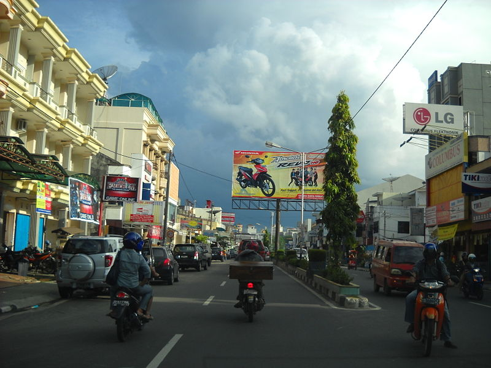
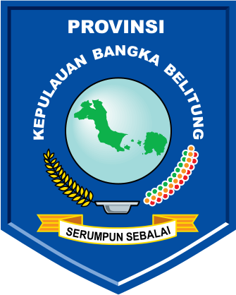
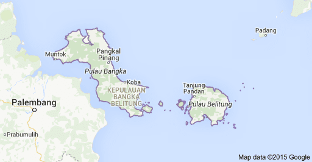

Sejarah

Wilayah Provinsi Kepulauan Bangka Belitung, terutama Pulau Bangka berganti-ganti menjadi daerah
taklukan Kerajaan Sriwijaya dan Majapahit. Setelah kapitulasi dengan Belanda, Kepulauan Bangka
Belitung menjadi jajahan Inggris sebagai "Duke of Island". 20 Mei 1812 kekuasaan Inggris berakhir
setelah konvensi London 13 Agustus 1824, terjadi peralihan kekuasaan daerah jajahan Kepulauan Bangka
Belitung antara MH. Court (Inggris) dengan K. Hcyes (Belanda) di Muntok pada 10 Desember 1816.
Kekuasaan Belanda mendapat perlawanan Depati Barin dan putranya Depati Amir yang dikenal sebagai perang
Depati Amir (1849–1851). Kekalahan perang Depati Amir menyebabkan Depati Amir diasingkan ke Desa Air
Mata Kupang NTT. Atas dasar stbl. 565, tanggal 2 Desember 1933 pada tanggal 11 Maret 1933 dibentuk
Resindetail Bangka Belitung Onderhoregenheden yang dipimpin seorang residen Bangka Belitung dengan 6
Onderafdehify yang dipimpin oleh Ast. Residen. Di Pulau Bangka terdapat 5 Onderafdehify yang akhirnya
menjadi 5 keresidenan sedang di Pulau Belitung terdapat 1 keresidenan. Di zaman Jepang, Keresidenan
Bangka Belitung diperintah oleh pemerintahan Militer Jepang yang disebut Bangka Beliton Ginseibu. Setelah
Proklamasi kemerdekaan Republik Indonesia, oleh Belanda dibentuk Dewan Bangka. Sementara pada 10
Desember 1946 (stbl.1946 No.38) yang selanjutnya resmi menjadi Dewan Bangka yang diketuai oleh Musarif
Datuk Bandaharo Leo yang dilantik Belanda pada 11 November 1947. Dewan Bangka merupakan Lembaga Pemerintahan
Otonomi Tinggi. Pada 23 Januari 1948 (stb1.1948 No.123), Dewan Bangka, Dewan Belitung dan Dewan Riau bergabung
dalam Federasi Bangka Belitung dan Riau (FABERI) yang merupakan suatu bagian dalam Negara Republik
Indonesia Serikat (RIS). Berdasarkan Keputusan Presiden RIS Nomor 141 Tahun 1950 kembali bersatu dengan
Negara Kesatuan Republik Indonesia (NKRI) hingga berlaku undang-undang Nomor 22 Tahun 1948. Pada tanggal
22 April 1950 oleh Pemerintah diserahkan wilayah Bangka Belitung kepada Gubernur Sumatra Selatan Dr. Mohd.
lsa yang disaksikan oleh Perdana Menteri Dr. Hakim dan Dewan Bangka Belitung dibubarkan. Sebagai Residen Bangka
Belitung ditunjuk R. Soemardja yang berkedudukan di Pangkal Pinang. Berdasarkan UUDS 1950 dan UU Nomor 22 Tahun
1948 dan UU Darurat Nomor 4 tanggal 16 November 1956 Keresidenan Bangka Belitung berada di Sumatra Selatan yaitu
Kabupaten Bangka dan dibentuk juga kota kecil Pangkal Pinang. Berdasarkan UU Nomor 1 Tahun 1957 Pangkal Pinang
menjadi Kota Praja. Pada tanggal 13 Mei 1971, Presiden Soeharto meresmikan Sungai Liat sebagai ibu kota Kabupaten
Bangka. Berdasarkan UU Nomor 27 Tahun 2000 wilayah Kota Pangkal Pinang, Kabupaten Bangka dan Kabupaten Belitung
menjadi Provinsi Kepulauan Bangka Belitung, dengan Pejabat Gubernur pertama Drs Amur Muhasyim SH dan Ketua DPRD
pertama H. Emron Pangkapi (Bang Emran). Selanjutnya sejak tanggal 27 Januari 2003 Provinsi Kepualauan Bangka
Belitung mengalami pemekaran wilayah dengan menambah 4 Kabupaten baru yaitu Kabupaten Bangka Barat, Bangka Tengah,
Belitung Timur dan Bangka Selatan.
Lambang Daerah

- Perisai Bersudut Lima, melambangkan Pancasila sebagai dasar Negara Kesatuan Republik Indonesia.
- Kepulauan Bangka Belitung, melambangkan wilayah, masyarakat, sistem pemerintah, kebudayaan dan
sumberdaya alam Propinsi Kepulauan Bangka Belitung.
- Lingkaran Bulat Simetrikal, melambangkan kesatuan dan persatuan Propinsi Kepulauan Bangka
Belitung dalam menghadapi segala tantangan di tengah-tengah peradaban dunia yang semakin terbuka.
- Butir Padi berjumlah 27 buah melambangkan nomor dari Undang-undang pembentukan Propinsi Kepulauan
Bangka Belitung, yaitu UU No.27 Tahun 2000,dan Buah Lada, berjumlah 31 buah melambangkan Kepulauan
Bangka Belitung merupakan Propinsi ke 31 dalam Negara Kesatuan Republik Indonesia. Padi dan buah
lada juga melambangkan kesejahteraan dan kemakmuran.
- Balok Timah, melambangkan kekayaan alam (hasil bumi pokok) berupa timah yang dalam sejarah secara
social ekonomis telah menopang kehidupan masyarakat Propinsi Kepulauan Bangka Belitung selama lebih
dari 300 tahun. (diketemukan dan dikelola sejak tahun 1710 Mary Schommers dalam Bangka Tin).
- Biru Tua dan Biru Muda (Dalam Perisai dan Lingkaran Hitam), melambangkan bahari dunia kelautan dari
yang dangkal sampai yang terdalam. Menyiratkan lautan dengan segala kekayaan alam yang ada di atasnya,
di dalam dan di dasar lautan yang dapat dimanfaatkan untuk sebesar-besarnya bagi kesejahteraan rakyat.
Putih (Tulisan), melambangkan keteguhan dan perdamaian.
- Kuning ( Padi dan Semboyan), melambangkan ketentraman dan kekuatan.
- Hijau (Pulau dan Lada), melambangkan kesuburan.
- Hitam (Outline Lingkaran), melambangkan ketegasan.
- Serumpun Sebalai, menunjukan bahwa kekayaan alam dan plularisme masyarakat Propinsi Kepulauan Bangka
Belitung tetap merupakan kelurga besar komunitas (serumpun) yang memiliki perjuangan yang sama untuk
menciptakan kesejahteraan , kemakmuran, keadilan dan perdamaian.
Untuk mewujudkan perjuangan tersebut, dengan budaya masyarakat melayu berkumpul, bermusyawarah, mufakat,
berkerjasama dan bersyukur bersama-sama dalam semangat kekeluargaan (sebalai) merupakan wahana yang paling
kuat untuk dilestarikan dan dikembangkan. Nilai- nilai universal budaya ini juga dimiliki oleh beragam etnis
yang hidup di Bumi Propinsi Kepulauan Bangka Belitung.
Dengan demikian, Serumpun Sebalai mencerminkan sebuah eksistensi masyarakat Propinsi Kepulauan Bangka Belitung
dengan kesadaran dan citacitanya untuk tetap menjadi keluarga besar yang dalam perjuangan dan proses kehidupannya
senantiasa mengutamakan dialog secara kekeluargaan, musyawarah dan mufakat serta berkerja sama dan senantiasa
mensyukuri nikmat Tuhan untuk mencapai masyarakat adil dan makmur.
Serumpun Sebalai, merupakan semboyan penegakan demokrasi melalui musyawarah dan mufakat.
Geografis

Provinsi Kepulauan Bangka Belitung terletak pada 104°50’ sampai 109°30’ Bujur Timur dan 0°50’ sampai
4°10’ Lintang Selatan, dengan batas-batas wilayah sebagai berikut:
- Di sebelah Barat dengan Selat Bangka
- Di sebelah Timur dengan Selat Karimata
- Di sebelah Utara dengan Laut Natuna
- Di sebelah Selatan dengan Laut Jawa
Wilayah Provinsi Kepulauan Bangka Belitung terbagi menjadi wilayah daratan dan wilayah laut dengan
total luas wilayah mencapai 81.725,14 km2. Luas daratan lebih kurang 16.424,14 km2 atau 20,10 persen
dari total wilayah dan luas laut kurang lebih 65.301 km2 atau 79,90 persen dari total wilayah Provinsi
Kepulauan Bangka Belitung
Wilayah
Administrasi
Berdasarkan Undang-Undang Nomor 5 tahun 2003 tanggal 25 Februari 2003 mengenai pembentukan
Kabupaten Bangka Selatan, Kabupaten BangkaTengah, Kabupaten Bangka Barat dan Kabupaten Belitung
Timur maka dengan demikian wilayah administrasi pemerintahan Provinsi Kepulauan Bangka Belitung
terbagi dalam 6 (enam) kabupaten dan 1 (satu) kota.
Dalam wilayah administrasi pemerintah kabupaten/kota terbagi dalam wilayah kecamatan, kelurahan/
desa dengan rincian per kabupaten sebagai berikut:
| Kabupaten / Kota |
Luas Wilayah |
Jumlah Penduduk (KM2) |
Kecamatan |
Kelurahan / Desa |
| Bangka |
2.950,88 |
324.305 |
8 |
77 |
| Bangka Barat |
2.820,61 |
204.778 |
6 |
63 |
| Bangka Tengah |
2.155,77 |
188.603 |
6 |
62 |
| Bangka Selatan |
3.607,08 |
201.782 |
8 |
53 |
| Belitung |
2.293,69 |
182.418 |
5 |
49 |
| Belitung Timur |
2.506,91 |
124.587 |
7 |
39 |
| Pangkalpinang |
89,40 |
204.392 |
7 |
42 |
| Total |
16.424,14 |
1.430.865 |
47 |
385 |
Pembangunan
Pembangunan Provinsi Kepulauan Bangka Belitung berdasarkan pada tujuan Pembangunan nasional yang
dijabarkan melalui pendekatan konsep pembangunan daerah. Adapun konsentrasi pembangunan ditinjau
menurut kabupaten/kota adalah sebagai berikut:
- Kabupaten Bangka dengan ibukota Sungailiat, berkonsentrasi pada pembangunan dan pengembangan
di bidang perdagangan dan jasa, industri, pariwisata, perkebunan dan pertambangan.
- Kabupaten Bangka Barat dengan ibukota Muntok, berkonsentrasi pada pembangunan di sektor
pertanian, perkebunan, pertambangan, industri pengolahan dan perdagangan.
- Kabupaten Bangka Tengah dengan ibukota Koba yang berkonsentrasi pada pembangunan sektor
perkebunan dan pertambangan.
- Kabupaten Bangka Selatan dengan ibukota Toboali berkonsentrasi pada pengembangan di sektor
pertambangan, pertanian, perkebunan dan perikanan laut serta perdagangan.
- Kabupaten Belitung dengan ibukota Tanjungpandan merupakan wilayah pengembangan sektor
perdagangan dan jasa, pertanian, pariwisata, industri pengolahan dan perikanan laut.
- Kabupaten Belitung Timur dengan ibukota Manggar merupakan wilayah pengembangan sektor industri
pengolahan, pertanian dan perkebunan, perikanan laut serta sektor pertambangan.
- Kota Pangkalpinang merupakan ibukota provinsi dan merupakan wilayah pengembangan sektor
industri pengolahan, perdagangan dan jasa serta pariwisata.
Submit a Comment
Your email address will not be published. Required fields are marked *
Baca juga:PERMUTASIAN PADA VIRUS CORONA
Riwayat Comment
| Nama |
Email |
Website |
Comment |